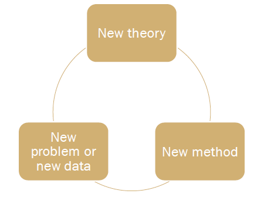

Making a contribution

Quote
The important issue is not how many contributions a study will make, but rather a significance for each.
-
Test the assumptions
-
… on which a significant stream of research relies
-
Taking a step back and identify core assumptions
-
-
Probe the external validity
- … of what we take to be true
- Common background factors?
-
The next new thing
- Open new domains of inquiry
- Make sure that this domain has significant implications if it was better understood
-
Work backward in the causal chain
-
Examine a variable, that if understood better, has major implications for a vast nest of relationships
-
Intervene in an accepted causal chain
- Taken-for-granted relationships? But really, really? What happens if they disappear?
-
Challenging conventional managerial practices/beliefs
-
Resolve inconsistent findings
- Requires taking a step back…
- Examine a stream of research in a holistic fashion
- Focus on subtleties, that may have not so subtle implications
Do you have a contribution?!
| a) Three questions-pitch | b) Elevator pitch |
|---|---|
| * Answer the following three questions about your research. | * Imagine yourself going in the elevator and meeting the Rector of Tilburg University, who asks you to tell him what your MSc research is about…right-aligned |
| 1. What’s new about it? • E.g., new data? new variables? new method? |
Have only 1-2 sentences, adhering to one of the following two structure: |
| 2. Is it useful (and to whom?) | |
| 3. Is it interesting? • Simply telling something everyone knows already isn’t interesting (known facts ≠ interesting) |
While ..., our research shows that... Despite …, we find that… |
| • Phenomenon, Gap, Aha! | |
| • Would you get your friends excited about it?! |
Tip
Your pitch won’t be perfect at the first time – so practice it over and over again – until you really become enthusiastic about it!